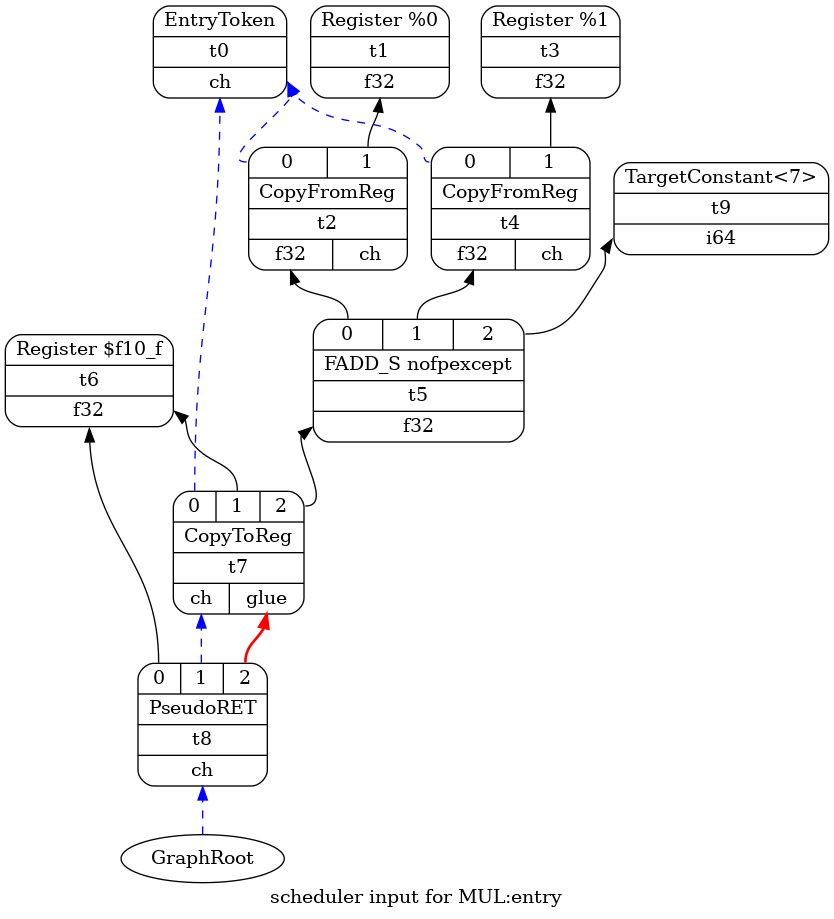

LLVM Backend
Table of Contents
1 LLVM Backend
https://llvm.org/docs/WritingAnLLVMBackend.html
https://llvm.org/docs/CodeGenerator.html
https://llvm.org/devmtg/2014-10/Slides/Cormack-BuildingAnLLVMBackend.pdf
clang 编译 c 代码的过程大约为:
- 通过 clang 生成 llir
- 通过 opt 对 llir 进行优化
- 通过 llc 根据 llir 生成 target 指令
其中 llc 即是 llvm 的 backend 的入口
llvm backend 的主要步骤是:
- instruction selection
- llir -> SelectionDAG
- SelectionDAG optimze & legalize
- instruction selection, SelectionDAG -> MachineDAG
- instruction scheduling
- register allocation
- prolog/epilog insertion
- peephole optimization
- codegen
1.1 TableGen
1.2 instruction legalize
1.3 instruction selection
https://eli.thegreenplace.net/2013/02/25/a-deeper-look-into-the-llvm-code-generator-part-1
以下面代码为例:
float MUL(float x, float y) { return x + y; }
1.3.1 llir
$> riscv-clang test.c -emit-llvm -c -O2
$> riscv-llvm-dis test.bc
$> cat test.ll
...
define dso_local float @MUL(float noundef %x, float noundef %y) local_unnamed_addr #0 {
entry:
%add = fadd float %x, %y
ret float %add
}
...
1.3.2 SelectionDAG
llc 接受几个参数, 可以显示不同阶段的 dag:
- `-view-dag-combine1-dags`, 生成最初的 SelectionDAG
- `-view-legalize-dags`, 生成最初的 legalize 之前的 SelectionDAG
- `-view-isel-dags`, 生成 instruct selection 之前的 SelectioDAG
- `-view-sched-dags`, 生成 instruct scheduling 之前的 MachineDAG
$> riscv-llc test.bc -view-dag-combine1-dags $> dot -Tpng tmp/dag.MUL-cb5dd4.dot -o a.png

1.3.3 MachineDAG
instruction selection 的目的是根据 target 无关的 SelectionDAG 生成和 target 相关的 MachineDAG
$> riscv-llc test.bc -view-sched-dags

fadd 被替换成为 FADD_S, 通过 `llc -debug` 可以看到 isel 是如何把 fadd 替换为 FADD_S
1.3.4 isel
把 SelectionDAG 看做 gcc rtl, 则 isel 和 gcc 的 recog 过程非常类似. isel 的作用是根据 target description (td) 中定义的 pattern 和 predicate 去匹配对应的 target instruction
例如 RSICVInstInfoF.td 中定义的关于 FADD_S 的 pattern:
def : PatFprFprDynFrm<any_fadd, FADD_S, FPR32>;
是指 `fadd xxx` 会匹配 `FADD_S`, 具体的匹配过程为:
- llvm-tblgen 通过 `-gen-dag-isel` 参数扫描 td 文件, 生成 RISCVGenDAGISel.inc, 后者与 gcc 的 recog 类似, 是一个巨大的 switch-case
- SelectionDAGISel 会扫描 SelectionDAG, 根据 RISCVGenDAGISel.inc 中的 pattern 把 SelectionDAG 转换为 MachineDAG
例如:
通过 `llc test.bc -debug` 生成 isel debug 信息:
ISEL: Starting selection on root node: t5: f32 = fadd t2, t4 ISEL: Starting pattern match Initial Opcode index to 1373928 TypeSwitch[f32] from 1373932 to 1373969 Creating constant: t9: i64 = TargetConstant<7> Morphed node: t5: f32 = FADD_S nofpexcept t2, t4, TargetConstant:i64<7> ISEL: Match complete!
debug 中的 opcode index 是 RISCVGenDAGISel.inc 中 MatcherTable 中的偏移量.
下面的 RISCVGenDAGISel.inc, 相当于下面的 switch-case 代码:
switch (opcode): case `fadd`: switch (return_type): case f16: /* ... */ break; case f32: if check_pattern_predicate (35): return FADD_S
RISCVGenDAGISel.inc:
/*1373923*/ /*SwitchOpcode*/ 1|128,11|128,1/*17793*/, TARGET_VAL(ISD::FADD),// ->1391721
/*1373928*/ OPC_Scope, 106, /*->1374036*/ // 9 children in Scope
/*1373930*/ OPC_RecordChild0, // #0 = $rs1
/*1373931*/ OPC_RecordChild1, // #1 = $rs2
/*1373932*/ OPC_SwitchType /*3 cases */, 32, MVT::f16,// ->1373967
...
/*1373967*/ /*SwitchType*/ 32, MVT::f32,// ->1374001
/*1373969*/ OPC_Scope, 14, /*->1373985*/ // 2 children in Scope
/*1373971*/ OPC_CheckPatternPredicate, 35, // (Subtarget->hasStdExtF()) && (MF->getSubtarget().checkFeatures("+64bit"))
/*1373973*/ OPC_EmitInteger, MVT::i64, 14,
/*1373976*/ OPC_MorphNodeTo1, TARGET_VAL(RISCV::FADD_S), 0,
MVT::f32, 3/*#Ops*/, 0, 1, 2,
// Src: (fadd:{ *:[f32] } FPR32:{ *:[f32] }:$rs1, FPR32:{ *:[f32] }:$rs2) - Complexity = 3
// Dst: (FADD_S:{ *:[f32] } ?:{ *:[f32] }:$rs1, ?:{ *:[f32] }:$rs2, 7:{ *:[i64] })
inc 中的 `OPC_Scope, 106` 和 `MVT:F32` 的 case 是通过 td 中的 pat 生成的:
def : PatFprFprDynFrm<any_fadd, FADD_S, FPR32>;
`OPC_CheckPatternPredicate, 35` 和 是根据 FADD_S 要求的 predicate 生成的:
defm FADD_S : FPALU_rr_frm_m<0b0000000, "fadd.s", FINX>;
其中 FINX 通过 tablegen 展开后会包含 hasStdExtF 这个 predicate
另外, td 文件除了包含 isel 需要的 pattern, 还包含 codegen 需要的汇编指令和机器指令信息, scheduler 需要的 sched 信息, disassembler 需要的汇编和机器指令信息以及寄存器信息等.